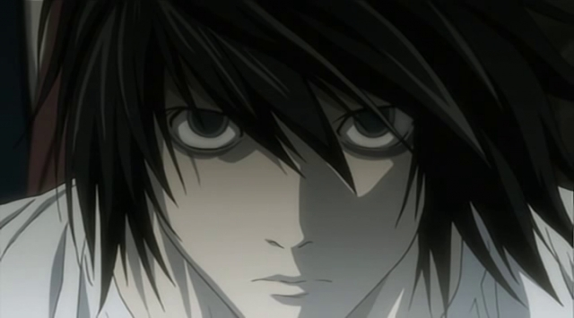
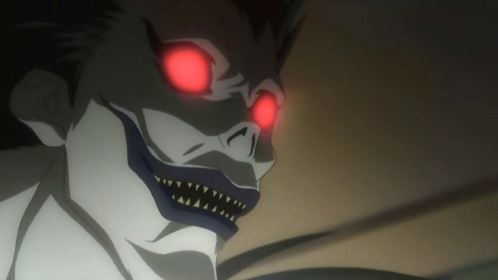
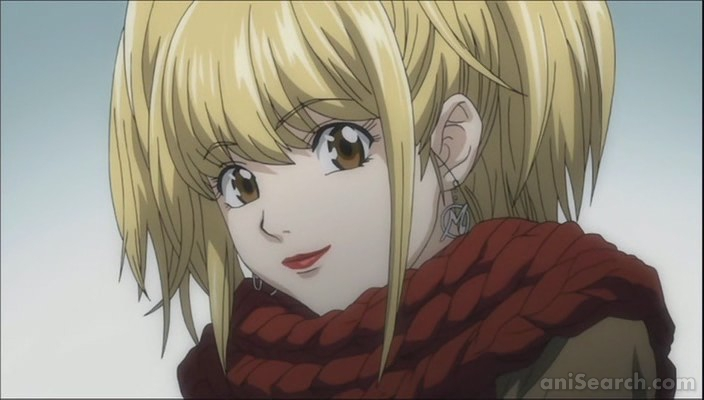
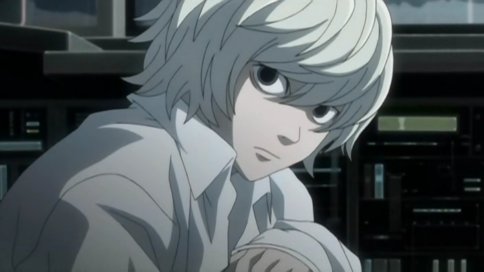
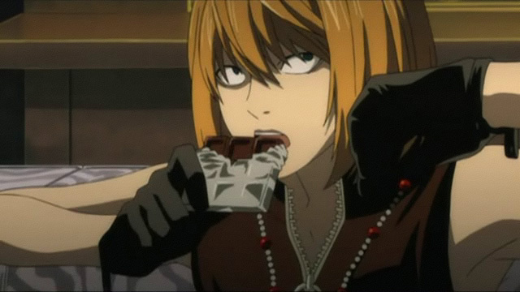

Ягами Лайт, также известный как Кира — главный персонаж манги, аниме-сериала и фильмов «Тетрадь смерти».
Лайт показан, как очень умный, расчётливый, с повышенным чувством справедливости молодой человек. По сюжету к нему попадает Тетрадь смерти — тетрадь, с помощью которой можно безнаказанно убить человека, лишь записав его имя и представив лицо этого человека. Тогда, с развитием сюжета возомнив себя богом нового мира, стал довольно высокомерным и заносчивым персонажем. С помощью Тетради смерти Ягами Лайт решил создать новый мир без преступников и стал карать всех, кто совершал преступления. Но позже, стал постепенно избавляться от всех, кто его искал или стоял у него на пути.
В конце повествования, после раскрытия личности Киры, Лайт погибает, потому что Рюк, по соглашению использующего Тетрадь и бога смерти, давшего Тетрадь, записывает его имя в своей Тетради и улетает в свой мир.
L

L — один из главных персонажей. Считается лучшим детективом мира. По сюжету он противостоит серийному убийце Кире, который обладает этой самой тетрадью.
Раскрыл множество дел, однако брался лишь за те дела, где на кону стояло больше миллиона долларов или жизни 10 людей, и, конечно, только за те, которые его интересовали.
Успешно скрывал своё имя, происхождение и лицо даже от Интерпола, однако в процессе расследования дела Киры открыл своё лицо наиболее надёжным полицейским и двум подозреваемым. Со всеми остальными общался, скрывая лицо за литерой L, написанной шрифтом Old English Text MT.
Умирает когда бог смерти вписывает его имя в свою тетрадь.
Рюк

Рюк — Бог смерти, которому было очень скучно в своём мире, и ради развлечения он подкинул тетрадь с «руководством пользователя» в человеческий мир. Как позже выясняется, это была не его тетрадь, а тетрадь другого бога смерти — Сидо. Рюк никогда не испытывал никаких особых чувств к Лайту, он не хотел ни помогать, ни мешать ему, но с интересом наблюдает за его действиями.
Рюк обожает яблоки, и иногда помогал Лайту ради возможности их есть. У него была физическая зависимость от яблок, и даже возникала ломка(Рюк утверждал, что без яблок его буквально с ног на голову переворачивает).
— Яблоки - для меня это как наркотики или алкоголь для людей.
Миса

Миса Аманэ — героиня манги, аниме и фильмов «Тетрадь Смерти». Известная фотомодель. Мало кто узнал бы в ней убийцу, устроившего переполох на телестудии «Сакура ТВ», второго Киру.
Благодарная Кире за наказание убийцы своих родителей, она готова пойти на всё, чтобы найти его. Влюбившись в Лайта Ягами, она дважды совершает сделку с Богом смерти, чтобы получить Глаза Бога Смерти и быть полезной ему.
Миса имела покровителей среди Богов смерти. Вначале это был Джелос. Он продлил жизнь Мисы ценой своей жизни, записав имя её убийцы в Тетради Смерти, ведь Боги смерти не имеют права продлевать жизнь кому-либо, а тот, кто нарушает это правило — умирает. Другая Богиня смерти — Рэм — присутствовала при этом и решила передать оставшуюся после Джеласа тетрадь Мисе. Кроме того, Рэм сама является в человеческий мир и следует за Мисой, оберегая её.
Ниа

Ниа - один из претендентов на место L, позже ставший его наследником. Во время размышлений над расследованием играет в различные детские игры.
Ниа — вероятно, один из самых близких по духу к L персонажей. Как и L, он эксцентричен, замкнут и бесстрастен. Определённо, L был для него авторитетом, однако после известия о смерти детектива, Ниа заявляет, что тот «проиграл, потому что не мог играть правильно».
После отказа о сотрудничестве Мэлло из-за различий в характерах, Ниа приступает к расследованию дела Киры, взяв себе псевдоним N. Собрав команду из опытных детективов, он выходит на Второго L, который и становится его главным подозреваемым. Поменяв настоящую Тетрадь смерти на фальшивую, во время встречи с Лайтом доказывает всем присутствующим на встрече, что Лайт — это Кира. Таким образом в битве гениальных умов победил Ниа, но только с помощью Мэлло, он смог закончить дело L и разоблачить Киру.
Мелло

Мелло - был одним из преемников L'a, часто "соревновался" с Ниа, гонялся за Кирой
Мелло эмоционален и вспыльчив, эта эмоциональность, по мнению многих, мешает ему. Крайне упорен и упрям, к поставленной цели будет идти любыми путями, не заботясь насколько они законны или нет. Самостоятелен, по натуре лидер, быть первым и лучшим - вот его идея фикс, ненавидит проигрывать. Находчив, изобретателен, решителен, смел и самонадеян. Его планы могут граничить с безумием, но он никогда не отступит. Любит шоколад и не переносит тех, кто лучше его.
Решив похитить японскую теле-звезду Такаду Киёми, которая по совместительству является глашатаем Киры, умирает от сердечного приступа (Киёми записала его имя, которое ей сказал Лайт, на листе, вырванном из Тетради Смерти).Но несмотря на видимое поражение, Мелло не проиграл. Все действия, которые остальные считали безрассудными, оказались планом Мелло. И даже ненавидя Ниа, в итоге он ему помог. Благодаря его смерти Ниа понимает, какая же из всех Тетрадей Смерти является настоящей.